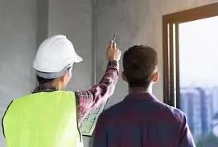
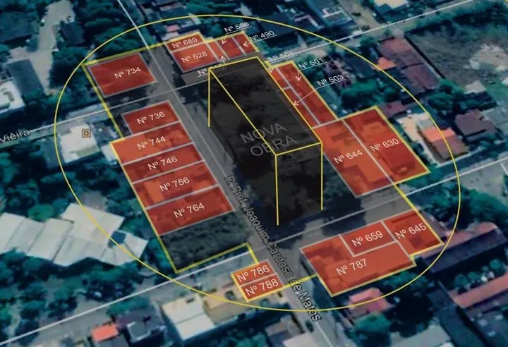

Laudos periciais para TJMT e TRF-1, avaliações de imóveis rurais e urbanos, perícias de engenharia civil e agronômica, assistência técnica e inspeção predial. Atuação em Mato Grosso e no interior de São Paulo.
Laudos periciais, avaliações de imóveis e inspeção predial em Mato Grosso e no interior de São Paulo, fundamentados nas normas ABNT e aceitos pelo TJMT, TRF-1 e instituições financeiras.
Avaliação de fazendas, sítios e propriedades rurais em Mato Grosso conforme NBR 14653-3. Laudos aceitos por bancos, tribunais e cartórios para financiamento, inventário e desapropriação.
Avaliação de casas, apartamentos, terrenos e imóveis comerciais em Cuiabá e Mato Grosso. Laudos NBR 14653 para compra e venda, financiamento, inventário e processos judiciais.
Perito do juízo nomeado pelo TJMT e TRF-1 em processos cíveis, desapropriações e disputas imobiliárias. Laudos periciais tecnicamente fundamentados e aceitos pelos tribunais de Mato Grosso.
Assistente técnico judicial para advogados e partes em Cuiabá-MT. Pareceres técnicos, quesitos e impugnação de laudos em processos imobiliários, construtivos e de desapropriação.

Inspeção predial e diagnóstico de vícios construtivos em Cuiabá-MT. Identificação de patologias, infiltrações, fissuras e não conformidades com emissão de laudo técnico.

Vistoria cautelar de vizinhança em Cuiabá-MT antes do início de obras. Registro fotográfico e técnico que protege construtoras e vizinhos de disputas judiciais futuras.
Avaliação de maquinário agrícola, equipamentos industriais e complexos agroindustriais em Mato Grosso para fins judiciais, patrimoniais e financeiros.
Regularização fundiária e usucapião em Cuiabá-MT. Levantamentos topográficos, memoriais descritivos e laudos técnicos para cartório, prefeitura e processo judicial.
Deriva de agrotóxicos, quebra de safra, comprovação de perdas (Proagro e seguro rural), arrendamento rural e contratos de fornecimento. Atuação conjunta das engenharias civil e agronômica em MT e no interior de SP.
A Perez Engenharia é especializada em perícia judicial, avaliação de imóveis e inspeção predial em todo o estado de Mato Grosso e no interior de São Paulo. Nosso trabalho é fundamentado nas normas técnicas da ABNT (em especial a NBR 14653) e nas melhores práticas reconhecidas pelo mercado e pelos tribunais.
Somos cadastrados como peritos junto aos Tribunais de Justiça de Mato Grosso (TJMT) e de São Paulo (TJSP), além da Justiça Federal (TRF-1 e TRF-3), atuando como perito do juízo e assistente técnico em processos cíveis, trabalhistas e de desapropriação nas esferas estadual e federal. No interior paulista, contamos com base técnica na região de Piracicaba, o que garante agilidade em vistorias e diligências.
Atendemos advogados, escritórios de advocacia, construtoras, incorporadoras, instituições financeiras, produtores rurais, síndicos e pessoas físicas, em Mato Grosso e no interior de São Paulo, que precisam de laudo pericial, avaliação de imóvel ou parecer técnico com respaldo normativo, imparcialidade e segurança jurídica.
"Profissionalismo nota 10. É difícil achar gente séria e pontual assim hoje em dia. Não deixou passar nada, tecnicamente perfeito!! Recomendo muito pra quem não quer ter dor de cabeça."
"Muito prestativos e educados. Laudo foi muito completo e me ajudou a atingir meus objetivos."
"Profissional excelente! Preço justo e foi muito atencioso comigo sempre que precisei, tirou todas minhas dúvidas."
A perícia judicial é um exame técnico realizado por profissional habilitado, nomeado pelo juiz, para esclarecer questões que exigem conhecimento especializado em engenharia. É necessária em disputas envolvendo vícios construtivos, avaliação de imóveis em inventários ou desapropriações, delimitação de responsabilidades em obras e outros litígios que dependam de análise técnica. O perito do juízo atua com imparcialidade, enquanto o assistente técnico representa os interesses de cada parte.
O perito do juízo é nomeado pelo juiz e atua com neutralidade, produzindo o laudo oficial do processo. O assistente técnico é contratado por uma das partes (autor ou réu) para acompanhar a perícia, formular quesitos e apresentar pareceres técnicos divergentes quando necessário. Atuamos nas duas funções junto ao TJMT e ao TRF-1.
A avaliação segue a NBR 14653 da ABNT, norma que regulamenta as metodologias aceitas pelos tribunais e instituições financeiras. O engenheiro visita o imóvel, coleta dados de mercado, aplica o método adequado (comparativo, evolutivo ou involutivo) e emite laudo fundamentado com valor de mercado ou valor patrimonial, dependendo da finalidade.
É o registro técnico do estado de conservação de imóveis próximos a uma obra, realizado antes do início dos trabalhos. Protege tanto o construtor (documentando que eventuais danos preexistiam) quanto o vizinho, que tem a prova do estado original do seu imóvel. É altamente recomendada para qualquer obra de médio ou grande porte em áreas urbanas.
Sim. Atuamos em todo o estado de Mato Grosso, incluindo Várzea Grande, Rondonópolis, Sinop, Lucas do Rio Verde, Sorriso, Tangará da Serra, Barra do Garças, Pontes e Lacerda e demais municípios. Para perícias em comarcas do interior, os custos de deslocamento são informados previamente no orçamento. Também atendemos o interior de São Paulo (região de Piracicaba, Limeira, Rio Claro e Campinas) por meio de base técnica local.
Preencha o formulário e retornaremos em breve.
Obrigado pelo contato. Retornaremos em breve.